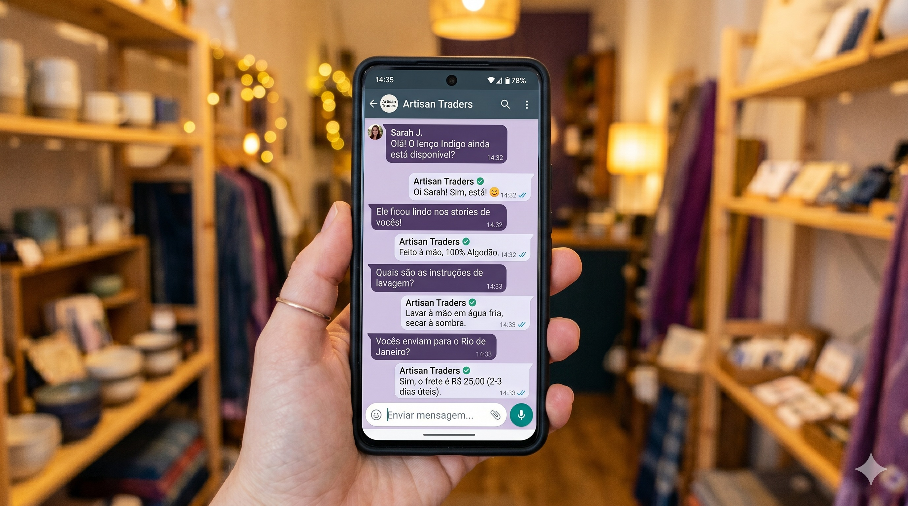

IA no WhatsApp: como responder mais rápido e parar de perder vendas sem contratar chatbot

Eduardo Duarte
Consultor de Gestão & Customer Experience · sonata.cx
Pesquisadores do MIT acompanharam durante três anos o comportamento de empresas ao responder contatos de potenciais clientes e mediram o impacto do tempo de resposta na conversão de vendas. O resultado, publicado na Harvard Business Review, é direto: empresas que respondem um contato em até uma hora são sete vezes mais propensas a converter esse cliente do que as que demoram mais. Depois de 24 horas sem resposta, a probabilidade de conversão cai para perto de zero.
Isso foi medido por e-mail e telefone. No WhatsApp Business, onde a expectativa de resposta é de minutos, a tolerância do consumidor é ainda menor.
Por que pequenos negócios perdem vendas no WhatsApp todos os dias
O cenário é familiar para quem tem um negócio local. Você está atendendo alguém na loja, no meio de uma entrega ou num final de tarde sem energia para ficar digitando. O WhatsApp acumula mensagens, você responde quando sobra tempo, e quando sobra tempo, o cliente já fechou com o concorrente. Não necessariamente porque o concorrente é melhor, mais barato ou mais próximo, mas porque o concorrente respondeu primeiro.
No Brasil, o WhatsApp é o principal canal de atendimento ao cliente em pequenos e médios negócios. De acordo com dados da Meta, o país tem mais de 170 milhões de usuários ativos na plataforma. Para o comércio local e os prestadores de serviço do interior, o aplicativo virou, na prática, o balcão, o telefone e o vendedor ao mesmo tempo, mas a maioria ainda usa de forma reativa, respondendo quando sobra tempo e de qualquer forma.
Por que a maioria dos pequenos negócios não resolve esse problema
Quando o assunto é automatizar o atendimento no WhatsApp, a primeira imagem que vem à cabeça é a de um chatbot, e com ela vem a proposta de alguma empresa de tecnologia cobrando entre R$ 300 e R$ 800 por mês por um sistema que demora semanas para configurar e que soa artificial para quem recebe.
Esse caminho existe e faz sentido para negócios com volume alto de atendimento. Mas para a grande maioria dos negócios menores, ele é desproporcional ao problema, e é por isso que o problema continua sem solução: a alternativa mais conhecida parece cara demais, então não se faz nada.
O que pouca gente sabe é que dá para resolver a maior parte da questão combinando os recursos gratuitos do WhatsApp Business com ferramentas de inteligência artificial abertas ao público, sem nenhum sistema contratado e sem perder o toque pessoal no atendimento.
Como configurar o WhatsApp Business para responder automaticamente
O WhatsApp Business é a versão do aplicativo desenvolvida para negócios, disponível gratuitamente na App Store e no Google Play. Ele tem três funcionalidades de atendimento automático que a maioria das pessoas ignora:
1. Mensagem de saudação
Enviada automaticamente quando um cliente manda mensagem pela primeira vez ou depois de 14 dias sem contato. Você escreve o texto uma vez e o aplicativo envia sozinho, mesmo que você esteja ocupado atendendo outra pessoa.
2. Mensagem de ausência
Disparada fora do horário comercial que você definir. O cliente que manda mensagem às 22h, por exemplo, recebe uma resposta imediata informando que você está fora do horário e quando vai retornar, em vez de silêncio absoluto.
3. Respostas rápidas
Mensagens completas salvas com um atalho de uma palavra. Você digita /preco e o texto com sua tabela ou condições comerciais é inserido automaticamente na conversa. Qualquer resposta que você digita mais de três vezes por semana já justifica virar uma resposta rápida.
Para acessar essas configurações: abra o WhatsApp Business, toque nos três pontos no canto superior direito e acesse Configurações > Ferramentas comerciais. Tudo está lá, sem custo.
Como usar IA para montar o kit de respostas do seu WhatsApp
A inteligência artificial não substitui o atendimento humano no WhatsApp — ela ajuda a construir o repertório de respostas que vai tornar esse atendimento mais rápido e consistente.
O processo é simples:
Passo 1: Liste as dez ou quinze perguntas que chegam com mais frequência no seu WhatsApp. Preço, disponibilidade, prazo de entrega, formas de pagamento, endereço, horário de funcionamento, política de troca.
Passo 2: Para cada pergunta, abra o ChatGPT ou o Gemini e faça um pedido específico. Exemplo: "Me ajude a escrever uma resposta para clientes que perguntam sobre prazo de entrega. Meu negócio é uma loja de roupas, entrego em até 2 dias úteis na cidade e em até 5 dias para outras cidades pelo Correios."
Passo 3: Edite o rascunho que a IA gerar para o seu jeito de falar, revise as informações e salve como resposta rápida no WhatsApp Business.
O ganho não é só de velocidade, mas de consistência: a informação que você passa hoje é a mesma que você passa amanhã, sem variação por cansaço ou pressa. E, porque você editou e aprovou cada texto antes de salvar, continua sendo você respondendo. Isso facilita até para o funcionário de atendimento, que vai sentir mais segurança ao responder os clientes.
O que muda no atendimento na prática
Um negócio que configura essas ferramentas numa tarde passa a responder contatos fora do horário com uma mensagem imediata, reduzir o tempo de resposta em perguntas frequentes de minutos para segundos e liberar atenção para as conversas que realmente exigem atenção — negociações, reclamações e pedidos fora do padrão.
O atendimento no WhatsApp não precisa ser impessoal para ser rápido. O que o torna impessoal é o improviso diário, a resposta diferente dada para a mesma pergunta dependendo do humor ou do cansaço do dia e, acima de tudo, a demora, que frustra o cliente e o faz procurar alternativas fora do seu negócio.
Um kit bem feito, com mensagens que você mesmo escreveu e revisou, entrega consistência sem abrir mão da identidade da sua marca. A tecnologia para encurtar o tempo de resposta já existe, não custa nada e cabe no celular que você já usa. O que falta, na maioria dos casos, é planejamento: uma tarde para organizar o que o WhatsApp Business já oferece e montar as respostas que vão trabalhar no lugar do silêncio.
Se você quer entender como a Sonata pode apoiar seu negócio na organização do atendimento e no uso prático da IA, acesse sonatacx.com.br, acompanhe a Sonata no Instagram em @sonata_cx ou fale pelo WhatsApp e e-mail disponíveis no site.
sonata.cx
Seu atendimento está perdendo vendas por falta de processo?
A Sonata ajuda pequenas e médias empresas a estruturar processos de atendimento, aplicar ferramentas de IA onde elas geram resultado real e transformar o WhatsApp num canal de vendas consistente.
Perguntas frequentes sobre IA no WhatsApp Business
O WhatsApp Business é gratuito?
Sim. O WhatsApp Business está disponível gratuitamente para download na App Store e no Google Play. Os recursos de mensagem automática, respostas rápidas e catálogo de produtos não têm custo.
Preciso contratar um chatbot para automatizar o atendimento no WhatsApp?
Não necessariamente. Para a maioria dos pequenos negócios, os recursos nativos do WhatsApp Business combinados com um kit de respostas criado com IA cobrem as principais necessidades de atendimento sem custo adicional.
Como a inteligência artificial ajuda no WhatsApp Business?
A IA, como o ChatGPT ou o Gemini, ajuda a redigir mensagens padronizadas para as perguntas mais frequentes do seu negócio. Você revisa, ajusta para o seu tom e salva como resposta rápida no aplicativo — reduzindo o tempo de resposta sem perder o atendimento personalizado.
Qual a diferença entre WhatsApp Business e WhatsApp comum?
O WhatsApp Business oferece funcionalidades exclusivas para negócios: perfil comercial com endereço e horário, catálogo de produtos, mensagens automáticas de saudação e ausência, respostas rápidas e etiquetas para organizar conversas.
Em quanto tempo o cliente espera uma resposta no WhatsApp?
Pesquisa do MIT publicada na Harvard Business Review indica que a janela crítica de resposta é de até uma hora. No WhatsApp, onde a comunicação é percebida como instantânea, essa expectativa tende a ser ainda menor — em geral, clientes esperam retorno em minutos, não horas.